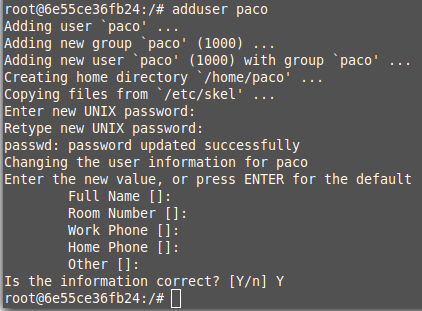

Creo el contenedor de correo "appl_email_ports
Añado la ip de mi contenedor docker y la de el anfitrion de manu a mi /etc/hosts del anfitrion y del contenedor docker
Instalo postfix y dovecot y configuro el servidor como internet site y el nombre sera "migueldocker.lan"
Añado un usuario que usar en el servidor de correo
Configuro la cuenta en Thunderbird

hago una prueba enviandome un correo a mi mismo y funciona
Manu y yo no hemos conseguido mandarnos correos mutuamente usando thunderbird